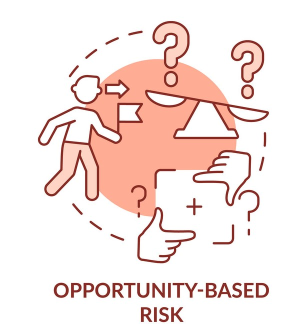

ECO3323 Enterprise Risk Management
ECO3323 การบริหารความเสี่ยงองค์กร
คณะเศรษฐสาสตร์ มหาวิทยาลัยรามคำแหง
December 15, 2023
Course Details
My info.
- อาจารย์ ดร.วัลลภ คุ้มประดิษฐ์
- สาขาวิชาเอก เศรษฐศาสตร์ทฤษฎีและเชิงปริมาณ
- Email: wonlope.kh@rumail.ru.ac.th
- ตึก ECB2 ห้อง 505
- Office Hours: Mon 09.30 – 12.00, Thu 09.30 – 12.00
คำอธิบายรายวิชา
ความหมายความเสี่ยง ความไม่แน่นอน สภาวะที่ก่อให้เกิดภัย ต้นทุนความเสี่ยง รูปแบบ กรอบและกระบวนการการบริหารความเสี่ยง การระบุความเสี่ยง การประเมินความเสี่ยง การตอบสนองความเสี่ยง การติดตามและทบทวนความเสี่ยง ดัชนีชี้วัดความเสี่ยง วัฒนธรรมความเสี่ยง จริยธรรมธรรมาภิบาลและการบริหาร ความเสี่ยง และการจัดการความเสี่ยงทางการเงินเบื้องต้น
A study of definition of risks, uncertainty, hazard, and cost of risk; categories of risk, risk management process, identification, risk assessment, risk response, risk monitoring and control; early warning system; risk measure; risk culture; risk experience; ethic of management and good governance; and the fundamentals of financial risk management
หัวข้อสอน
- นิยามและกระบวนการการบริหารความเสี่ยงขององค์กร
- กรณีศึกษาการบริหารความเสี่ยงองค์กร
- การกำกับดูแลกิจการที่ดีและการบริหารความเสี่ยงองค์กร
- ทฤษฎีความเสี่ยงและผลตอบแทน
- การบริหารความเสี่ยงด้านตลาด
- Asset Liability Management
- การบริหารความเสี่ยงด้านเครด
- การบริหารความเสี่ยงด้านการปฏิบัติการ
- ความเสี่ยงทางด้านกลยุทธ์
- ความเสี่ยงทางด้านการเงิน
การให้คะแนน
- Option 1
- Final Exam 80%
- Homework 20%
- Option 2
- Final Exam 100%
1. นิยามและกระบวนการการบริหารความเสี่ยงขององค์กร
1. ความหมายและคำจำกัดความของการบริหารความเสี่ยงองค์กร
- มีอยู่ 2 คำคือ
- ความเสี่ยง (Risk)
- การบริหาร/การจัดการ (Administration / Management)
- เมื่อนึกถึงความเสี่ยง นักศึกษานึกถึงอะไร ตอบคนละ 1 คำตอบ
นิยามความเสี่ยง
ตัวอย่างสาเหตุของความเสี่ยง
ตัวอย่างรูปแบบของความเสี่ยง
- ความเสี่ยงที่มองเห็น (Forseen Risks)
- ความเสี่ยงที่มองไม่เห็น (Unforeseen Risks)
Definition of Risk
- Risk is a
chanceof losses - Risk is the
possibilityof unfortunate occurrence Unforeseenevents, eventualitiesUnpredictabilityProbabilityof some happening that is unwanted and unavoidable
ความเสี่ยง (Risk)
ความเสี่ยง หมายถึง ความไม่แน่นอน (Uncertainty) ที่อาจส่งผลกระทบต่อวัตถุประสงค์/เป้าหมายขององค์กร โดยผลกระทบดังกล่าวทำให้การดำเนินงานเบี่ยงเบนไปจากเป้าหมาย หรือความคาดหวัง โดยอาจวัดระดับความรุนแรงของความเสี่ยงได้จากผลกระทบ
(Impact)ที่ได้รับ และโอกาสที่จะเกิด(Likelihood)ของเหตุการณ์
- สรุปได้ว่า ความเสี่ยง คือ เหตุการณ์ที่มีความไม่แน่นอน หรือเหตุการณ์ที่อาจจะเกิดขึ้นในอนาคต แต่ถ้าเกิดขึ้นแล้วจะส่งผลกระทบต่อการบรรลุวัตถุประสงค์ และเป้าหมายขององค์กร ทั้งในเชิงบวกและเชิงลบ
- ซึ่งจะแตกต่างกับ ปัญหา ที่หมายถึงสิ่งที่เกิดขึ้นแล้วและเป็นอุปสรรคต่อการดำเนินงาน เป็นสิ่งที่ต้องรีบดำเนินการปรับปรุงแก้ไข
การจำแนกความเสี่ยงเป็น 3 ลักษณะ คือ
- ความเสี่ยงบนโอกาส (Opportunity-based risk)
- ความเสี่ยงบนความไม่แน่นอน (Uncertainty-based risk)
- ความเสี่ยงที่เป็นอันตราย (Hazard-based risk)
1. ความเสี่ยงบนโอกาส (Opportunity-based risk)
- เป็นความเสี่ยงที่เกิดจากการตัดสินใจเลือกสิ่งหนึ่งจากทางเลือกทั้งหมดที่มี เช่น
- ความผิดผลาดที่ไม่ได้เลือกสิ่งที่ดีกว่าหรือดีที่สุด
- การได้รับผลลัพธ์ที่มิได้คาดหวังไว้
- หากพิจารณาในทางธุรกิจ ความเสี่ยงบนโอกาส ยกตัวอย่างเช่น การย้ายสถานที่/ทำเลของธุรกิจ การซื้อสินทรัพย์/หลักทรัพย์ใหม่ การขายผลิตภัณฑ์หรือบริการใหม่ เป็นต้น

2. ความเสี่ยงบนความไม่แน่นอน (Uncertainty-based risk)
- เป็นความเสี่ยงที่เกิดจากความไม่แน่นอนหรือเหตุการณ์ที่ไม่คาดคิด ซึ่งยากที่จะคาดการณ์เหตุการณ์และความเสียหายที่จะเกิดขึ้น รวมถึงยากที่จะควบคุมความเสียหายเมื่อเกิดเหตุการณ์นั้น เช่น
- ความสูญเสียที่เกิดจากวาตภัย อุทกภัย หรือภัยธรรมชาติต่างๆ
- ความสูญเสียที่ไม่คาดคิดทางการเงินที่เกิดจากภาวะเศรษฐกิจถดถอย หรือการล้มละลายของภาคธุรกิจ
- การสูญเสียลูกค้าหรือซัพพลายเออร์ที่สำคัญ
- การลดลงของส่วนแบ่งการตลาดจากคู่แข่งรายใหม่ เป็นต้น
3. ความเสี่ยงที่เป็นอันตราย (Hazard-based risk)
- เป็นความเสี่ยงที่เกิดจากสถานการณ์ที่อันตรายในสถานที่ทำงาน เช่น
- เกิดเสียงรบกวน สภาพอากาศที่แย่ หรือปัจจัยแวดล้อมต่างในสถานที่ทำงานที่เป็นอุปสรรคต่อการทำงาน
- อุปกรณ์ที่ผิดพลาด หรือกระบวนการที่แย่เมื่อใช้อุปกรณ์ เช่น เครื่องจักรกล
- การเก็บรักษาที่ไม่เหมาะสมหรือการใช้สารเคมีที่ติดไฟเป็นพิษหรือสารก่อมะเร็ง
- อันตรายทางชีวภาพที่เกิดจากไวรัส แบคทีเรีย เชื้อรา หรือศัตรูพืช
- อันตรายจากการใช้สอยที่เกิดจากการออกแบบสถานที่ทำงาน การจัดวาง หรือการใช้อุปกรณ์
- อันตรายที่เกิดจากการกลั่นแกล้ง และการล่วงละเมิด การเลือกปฏิบัติ ภาระงานที่หนักเกินไป หรือการไม่สอดคล้องของทักษะของพนักงานที่มีหน้าที่ในงานนั้น เป็นต้น
2. การประเมินความเสี่ยง (Risk Assessment)
การประเมินความเสี่ยง (Risk Assessment)
หมายถึง กระบวนการระบุความเสี่ยง การวิเคราะห์ความเสี่ยงโดยการประเมินจากโอกาสที่จะเกิด (Likelihood) และผลกระทบ (Impact) โดย
- โอกาสที่จะเกิด (Likelihood) คือ ความถี่หรือโอกาสที่จะเกิดเหตุการณ์ความเสี่ยง
- ผลกระทบ (Impact) คือ ขนาดความรุนแรงของความเสียหายที่จะเกิดขึ้น หากเกิดเหตุการณ์ความเสี่ยง
3. การบริหารความเสี่ยง (Risk Management)
การบริหารความเสี่ยง (Risk Management)
หมายถึง กระบวนการ (Process) หรือเครื่องมือที่ใช้ในการบริหารจัดการที่จะลดโอกาสที่เกิดความเสี่ยงจากผลการดำเนินการที่เบี่ยงเบนไปจากเป้าหมายที่กำหนดไว้ และ/หรือผลกระทบที่จะมีต่อองค์กร
4. การบริหารความเสี่ยงองค์กร (Enterprise Risk Management)
การบริหารความเสี่ยงองค์กร (Enterprise Risk Management)
หมายถึง กระบวนการ (Process) ที่ปฏิบัติโดยคณะกรรมการ ผู้บริหาร และบุคลากรทุกคนในองค์กร เพื่อช่วยในการกำหนดกลยุทธ์ (Strategy) และการดำเนินงาน (Operation) โดยกระบวนการบริหารความเสี่ยงได้รับการออกแบบเพื่อให้สามารถบ่งชี้เหตุการณ์ที่อาจเกิดขึ้น (Risk Identify) และมีผลกระทบต่อองค์กร และสามารถจัดการความเสี่ยงให้อยู่ในระดับที่องค์กรยอมรับ (Risk Appetite) เพื่อให้ได้รับความมั่นใจอย่างสมเหตุสมผลในการบรรลุวัตถุประสงค์ที่องค์กรกำหนดไว้
- ทั้งนี้ การบริหารความเสี่ยงไม่ได้เป็นการดำเนินการที่เกิดขึ้นครั้งหนึ่งแล้วสิ้นสุดไป แต่เป็นกระบวนการที่ต้องดำเนินการอย่างต่อเนื่อง ผู้บริหารและพนักงานทุกระดับควรประเมินความเสี่ยงและนำมาพิจารณาในระดับภาพรวมขององค์กร การนำกระบวนการบริหารความเสี่ยงไปปฏิบัติเป็นส่วนหนึ่งในงานประจำวันจะช่วยให้สามารถบ่งชี้เหตุการณ์ที่อาจเกิดขึ้น ที่มีผลกระทบต่อเป้าหมายขององค์กรได้อย่างทันท่วงที และสามารถจัดการความเสี่ยงให้อยู่ในระดับที่องค์กรยอมรับได้
5. ปัจจัยเสี่ยง (Risk Factors) และที่มาของความเสี่ยง (Source of Risk)
ปัจจัยเสี่ยง (Risk Factors)
หมายถึง ต้นเหตุหรือสาเหตุที่มาของความเสี่ยง ที่จะทำให้ไม่บรรลุวัตถุประสงค์ที่กำหนดไว้ ทั้งนี้ สาเหตุของความเสี่ยงที่ระบุควรเป็นสาเหตุที่แท้จริง เพื่อจะได้วิเคราะห์และกำหนดมาตรการลดความเสี่ยงภายหลังได้อย่างถูกต้อง
ที่มาของความเสี่ยงมาจาก 2 ปัจจัยหลัก คือ
- ปัจจัยภายนอก (External Factors)
- ปัจจัยภายใน (Internal Factors)
ปัจจัยภายนอก (External Factors)
หมายถึง ปัจจัยภายนอกองค์กรที่มีอิทธิพลต่อความสำเร็จของวัตถุประสงค์ เป็นปัจจัยที่ผู้บริหารควบคุมโอกาสที่จะเกิดไม่ได้ (Uncontrollable Occurrence) แต่อาจลดผลกระทบได้ (Risk Mitigation) เช่น การติดตามศึกษาเพื่อหาแนวโน้มที่จะเกิดและวิธีที่ควรปฏิบัติไว้ล่วงหน้า เพื่อเปลี่ยนวิกฤตเป็นโอกาส หรือเพื่อลดผลเสียหายที่จะเกิดขึ้น
PESTEL Analysis
PESTEL Analysis
ตัวอย่างปัจจัยภายนอก
- ภาวะการเมือง (Politics) เช่น การเปลี่ยนแปลงนโยบายภาษี ความไม่มีเสถียรภาพทางการเมือง การก่อการร้าย เป็นต้น
- ภาวะเศรษฐกิจ (Economics) เช่น ภาวะเงินเฟ้อ เงินฝืด ความผันผวนของอัตราดอกเบี้ยและอัตราแลกเปลี่ยน การเคลื่อนไหวของราคาหุ้น เป็นต้น
- สังคม (Society) เช่น การย้ายแหล่งที่อยู่ การเปลี่ยนแปลงโครงสร้างประชากร รสนิยมของสังคม โครงสร้างพื้นฐานครอบครัว เป็นต้น
- เทคโนโลยีสารสนเทศ (Technology) เช่น เหตุการณ์ที่เกี่ยวกับแนวโน้มการเปลี่ยนแปลงเทคโนโลยี E-Commerce การใช้สารสนเทศในการบริหาร เป็นต้น
- ภัยธรรมชาติและสิ่งแวดล้อม (Environment) เช่น การเกิดน้ำท่วม ไฟไหม้ แผ่นดินไหว คลื่นยักษ์สึนามิ โรคระบาด ที่ทำความเสียหายต่ออาคาร ทรัพย์สิน แหล่งวัตถุดิบ แรงงาน เป็นต้น
- กฎหมาย และกฎระเบียบ (Law) เช่น การเปลี่ยนแปลงเหตุการณ์ที่เกี่ยวกับการประกาศใช้กฎหมาย ระเบียบและข้อบังคับต่างๆ
ปัจจัยภายใน (Internal Factors)
หมายถึง ปัจจัยภายในองค์กรที่มีอิทธิพลต่อความสำเร็จของวัตถุประสงค์ เป็นปัจจัยที่ผู้บริหารสามารถจัดการหรือควบคุม (Controllable) ได้ ซึ่งสามารถใช้กรอบการวิเคราะห์ของ McKinsey 7-S Framework ได้แก่
McKinsey 7-S Framework
- 1.กลยุทธ์ (Strategy) คือ การวางแผนกิจกรรมภายในองค์กร โดยให้แผนที่วางขึ้นมานั้นได้สอดคล้องและเหมาะสมต่อการเปลี่ยนแปลงของสภาพแวดล้อมภายนอก และภายในองค์กร ซึ่งมีวัตถุประสงค์เพื่อให้ช่วยสนับสนุนให้องค์กรมีขีดความสามารถเหนือคู่แข่งขัน
- 2.โครงสร้างองค์กร (Structure) หมายถึง ลักษณะโครงสร้างขององค์การที่แสดงความสัมพันธ์ระหว่างอำนาจหน้าที่และความรับผิดชอบ รวมถึงขนาดการควบคุม การรวมอำนาจ และการกระจายอำนาจของผู้บริหาร การแบ่งโครงสร้างงานตามหน้าที่ ตามผลิตภัณฑ์ ตามลูกค้า ตามภูมิภาคได้อย่างเหมาะสม
- 3.สไตล์ (Style) หมายถึง สไตล์ในการทำงานของผู้บริหารนั้น มีความสำคัญเป็นอย่างยิ่งโดยเฉพาะผู้บริหารระดับสูง จะมีอิทธิพลต่อความรู้สึกนึกคิดของพนักงานภายในองค์กรมากกว่าคำพูดของผู้บริหาร
- 4.ระบบ (System) เป็นการวิเคราะห์ถึงระบบงานขององค์กรในทุก ๆ เรื่อง ทั้งเรื่องระบบการบริหารจัดการ ระบบการปฏิบัติงาน เช่น ระบบสารสนเทศ ระบบการวางแผน ระบบงบประมาณ ระบบการควบคุม ระบบการจัดซื้อ ระบบในการสรรหาและคัดเลือกพนักงาน ระบบในการฝึกอบรม ตลอดจนระบบในการจ่ายผลตอบแทน
- 5.บุคลากร (Staff) หมายถึง การคัดเลือกบุคลากรที่มีความสามารถ การพัฒนาบุคคลากรอย่างต่อเนื่อง
- 6.ทักษะ (Skill) เป็นการพิจารณาถึงทักษะหรือความเชี่ยวชาญขององค์กรโดยรวม ว่ามีความเชี่ยวชาญหรือมีความชำนาญในด้านใด
- 7.ค่านิยม (Shared Value) หมายถึง ค่านิยมร่วมกันระหว่างคนในองค์การ ความเป็นอันหนึ่งอันเดียวกัน
6. ความสำคัญของการบริหารความเสี่ยงองค์กร
ความสำคัญของการบริหารความเสี่ยงองค์กร
การนำกระบวนการบริหารความเสี่ยงมาใช้ในองค์กร จะช่วยให้เป็นหลักประกันในระดับหนึ่งว่าการดำเนินการต่าง ๆ ขององค์กร จะมีการดำเนินการให้บรรลุเป้าหมายที่วางไว้ เนื่องจากการบริหารความเสี่ยงเป็นการทำนายอนาคตอย่างมีเหตุมีผล มีหลักการ และหาทางลดหรือป้องกันความเสียหายในการทำงานแต่ละขั้นตอนไว้ล่วงหน้า หรือในกรณีที่พบกับเหตุการณ์ที่ไม่คาดคิด โอกาสที่จะประสบกับปัญหาน้อยกว่าองค์กรอื่น หรือหากเกิดความเสียหายขึ้น ก็จะเป็นความเสียหายที่น้อยกว่าองค์กรที่ไม่มีการนำกระบวนการบริหารความเสี่ยงมาใช้ เพราะได้มีการเตรียมการไว้ล่วงหน้า ในขณะที่องค์กรอื่นที่ไม่เคยมีการเตรียมการหรือไม่มีการนำแนวคิดของกระบวนการบริหารความเสี่ยงมาใช้ เมื่อเกิดสถานการณ์วิกฤตขึ้น องค์กรเหล่านั้นจะประสบกับปัญหาและความเสียหายที่ตามมาโดยยากที่จะแก้ไข
ดังนั้น การนำกระบวนการบริหารความเสี่ยงมาช่วยเสริมร่วมกับการทำงาน จะช่วยให้ภาระงานที่ปฏิบัติการอยู่เป็นไปตามเป้าหมายที่กำหนดไว้ และป้องกันโอกาสที่จะเกิดความเสี่ยงและปัญหาที่จะเป็นอุปสรรคต่อการดำเนินงาน
Assigment 1
- จงหา “ตัวอย่างบริษัทที่ล้มเหลวและกลับฟื้นคืนธุรกิจ” พร้อมวิเคราะห์
- Risk Factors and their impacts
- Risk Management
ตัวอย่างบริษัทที่ล้มเหลวและกลับฟื้นคืนธุรกิจ
ส่วนนี้จะเป็นการรวบรวมตัวอย่างของบริษัททั้ง 5 บริษัทที่เคยเกือบล้มเหลวทางธุรกิจ แต่สามารถกลับมาฟื้นคืนธุรกิจและประสบความสำเร็จได้ ทั้งนี้ เพื่อให้เห็นภาพชัดเจนมากขึ้นในความเสี่ยง โอกาส ผลกระทบ และการบริหารจัดการของทางธุรกิจต่อไปนี้
1. บริษัท Marvel
สาเหตุที่เกือบล้มเหลว
Marvel Comic เป็นสำนักพิมพ์ที่ก่อตั้งเมื่อปี 1961 ตีพิมพ์คอมมิคชุด Superhero ที่โด่งดังคับอเมริกามากกว่า 60 ปี โดยมีช่วงเวลาที่รุ่งเรืองของคอมมิคในยุค 80s ทำให้สามารถขยายไปทำการตลาดเกี่ยวกับของสะสมเพื่อเก็งกำไรได้ ในปี 1989 Marvel ถูกซื้อโดย Ronald R. Perelman บริษัทถูกนำเข้าตลาดหุ้น พวกเขาทำกำไรจากการใช้กลยุทธ์การตลาดต่อยอดหนังสือการ์ตูนไปสู่การผลิตของเล่น และของสะสมได้เป็นจำนวนมาก กระทั่งย่างเข้าสู่ครึ่งหลังของยุค 90s ที่เกิดภาวะเศรษฐกิจถดถอยในสหรัฐ กำลังซื้อหดหาย สินค้าค้างสต็อก บริษัทต้องเผชิญกับภาวะขาดทุน การเพิกถอนหุ้น และจบลงด้วยการยื่นขอล้มละลายในปี 1996
1. บริษัท Marvel
การกลับฟื้นคืนธุรกิจ
สิ่งที่ทำ Marvel ให้กลับมารุ่งโรจน์อีกครั้งคือ ‘ภาพยนตร์’ หลังจากยื่นขอล้มละลาย Marvel ได้ควบรวมกับ Toybiz และเปลี่ยนโมเดลธุรกิจเป็นการขายลิขสิทธิ์ Superhero แทน โดยก่อตั้ง Marvel Studios ขึ้น จัดหาผู้กำกับ นักแสดง และคนเขียนบทรวมกันเป็นแพ็คเกจและเสนอขายให้บริษัทอื่นสร้างเป็นภาพยนตร์ ทำให้พวกเขาสามารถสร้างรายได้ โดยอาศัยต้นทุนที่ต่ำ แต่ในขณะเดียวกันเมื่อเทียบกับรายได้ทั้งหมดของภาพยนตร์ ส่วนแบ่งกำไรจากลิขสิทธิ์ที่ได้กลับค่อนข้างน้อย จึงตัดสินใจเปลี่ยนมาสร้างหนังเอง Marvel เดิมพันครั้งใหญ่ด้วยการนำลิขสิทธิ์ Thor และ Captain America ไปค้ำประกันกับ Merrill Lynch เพื่อนำเงินมาสร้างหนัง 10 เรื่อง ในเวลา 7 ปี การเดิมพันครั้งนี้ประสบความสำเร็จอย่างงดงามภายใต้ชื่อของ Iron Man ภาพยนตร์ที่สร้างเป็นเรื่องแรก แต่ทำกำไรได้สูงกว่าเงินที่กู้มา
2. บริษัท Converse
สาเหตุที่เกือบล้มเหลว
บริษัท Converse Rubber Shoe Company ก่อตั้งขึ้นในปี 1908 โดยเริ่มผลิตรองเท้ายางธรรมดาออกขาย ก่อนจะเปลี่ยนมาเป็นการผลิตรองเท้ากีฬาครั้งแรกในปี 1915 จุดเปลี่ยนครั้งใหญ่เกิดขึ้นเมื่อนักบาสเก็ตบอลชื่อดัง Charles H. “Chuck” Taylor เข้ามาเป็น Brand Ambassador ให้กับ Converse และใส่รองเท้ารุ่น All-Star ในทุก ๆ การแข่งขัน Converse All-Star จึงประสบความสำเร็จเป็นอย่างมาก และเป็นที่นิยมในหมู่นักกีฬาบาสเก็ตบอล รวมถึงวัยรุ่นในสมัยนั้น
ความนิยมของ Converse รุ่งโรจน์ยาวนานอยู่หลายทศวรรษ จนกระทั่งในยุค 80s เริ่มมีการหลั่งไหลเข้ามาของแบรนด์คู่แข่งไม่ว่าจะเป็น Puma, Adidas และ Nike ที่มาพร้อมกับเทคโนโลยีรองเท้าที่ทันสมัยยิ่งกว่า Converse ต้องสูญเสียส่วนแบ่งทางการตลาดไปเป็นอย่างมาก บวกกับการตัดสินใจที่ผิดพลาดด้านการบริหาร ทำให้พวกเขาไม่สามารถช่วงชิงส่วนแบ่งทางการตลาดกลับมาได้ ในที่สุดบริษัทต้องล้มละลายลงในปี 2001
2. บริษัท Converse
การกลับฟื้นคืนธุรกิจ
Converse กลับมาผงาดอีกครั้งด้วยมือของแบรนด์ที่ครั้งหนึ่งเคยเป็นคู่แข่งกันอย่าง Nike ที่เข้ามาซื้อกิจการทั้งหมดในปี 2003 ด้วยเงินจำนวนถึง 305 ล้านเหรียญสหรัฐ ภายใต้การบริหารของ Nike Converse ถูกรีแบรนด์ขึ้นมาใหม่โดยโฟกัสไปที่การออกแบบร่วมกับเหล่าศิลปิน และดีไซน์เนอร์ รวมถึงทำงานร่วมกับแบรนด์อื่น และเพราะสายการผลิตถูกย้ายไปยังประเทศในแถบเอเชียทำให้ต้นทุนต่ำลง ในปี 2003 พวกเขาสามารถทำยอดขายได้ถึง 200 ล้านเหรียญสหรัฐ ทั้งยังพุ่งสูงเกือบ 2 พันล้านเหรียญในปี 2016 และแม้จะมีคอลเล็กชันใหม่ ๆ ออกมามากมายแค่ไหน Converse รุ่นที่ขายดีที่สุดก็ยังคงเป็นรุ่นออริจินัลคลาสสิค ตอกย้ำภาพลักษณ์แบรนด์ของ Converse ที่เปลี่ยนจากรองเท้ากีฬา ไปเป็นรองเท้าแฟชั่นแนววินเทจที่ใส่แล้วทำให้หวนนึกถึงวันวาน
3. บริษัท Starbucks
สาเหตุที่เกือบล้มเหลว
เทียบกับความนิยมในตอนนี้ คงไม่มีใครอยากจะเชื่อเลยว่า Starbucks จะเคยเผชิญกับวิกฤติทางการเงินอย่างรุนแรงในปี 2008 สาเหตุมาจากวิกฤตการเงินครั้งใหญ่ของสหรัฐอเมริกา เมื่อผู้บริโภคต้องลดค่าใช้จ่ายเพื่อรับมือกับราคาน้ำมัน และค่าครองชีพที่สูงขึ้น กาแฟจึงกลายเป็นสิ่งไม่จำเป็นสำหรับชีวิตไป พวกเขาสูญเสียค่าใช้จ่ายในการยุบสาขา และค่าชดเชยการเลิกจ้างพนักงานเป็นจำนวนมหาศาล หลังผลกำไรของบริษัทร่วงหนักถึง 96% ในไตรมาส 4 CEO ของบริษัทจึงออกมาประกาศพับแผนการขยายสาขาเพิ่มเติมอีก 40,000 สาขา เพื่อพยุงค่าใช้จ่ายขององค์กร

3. บริษัท Starbucks
การกลับฟื้นคืนธุรกิจ
หลังจากฝืดเคืองอยู่ช่วงใหญ่ ๆ ถือว่า Starbucks สามารถฟื้นตัวกลับมาได้เร็วพอสมควร ข้อนี้ต้องยกความดีความชอบให้กับ Howard Schultz ผู้ก่อตั้งของ Starbucks ที่กลับมานั่งแท่น CEO ได้อย่างทันท่วงที พร้อมสั่งปรับปรุงการดำเนินงาน และแก้ไขปัญหาที่รุงรังมาเนิ่นนาน หลังถูกวิจารณ์อย่างหนักว่าขยายจำนวนสาขามากเกินไป จนกลายเป็นแย่งลูกค้ากันเอง พวกเขาจึงแก้เกมส์โดยการปิดสาขาในอเมริกาที่ไม่ทำกำไรถึง 676 สาขา ทำให้สามารถลดค่าใช้จ่ายได้สูงถึง 370 ล้านเหรียญใน 9 เดือนหลังจากนั้น ทั้งยังพยายามนำเอาภาพลักษณ์เก่าที่มีมนต์ขลังของ Starbucks กลับคืนมา โดยหันมาให้ความสนใจกับรสชาติ และบรรยากาศของร้าน ลงทุนกับการโฆษณา รวมถึงขยายสายผลิตภัณฑ์ในลักษณะของกาแฟสำเร็จรูป จากกลยุทธ์ทั้งหมดทำให้ผลการดำเนินงานของ Starbucks ถือว่าดีขึ้นเป็นอย่างมาก เมื่อเทียบกับยอดขายของร้านอาหาร และร้านกาแฟอื่น ๆ ที่กำลังดิ่งลงเหวในช่วงเวลาเดียวกัน
4. บริษัท Adidas
สาเหตุที่เกือบล้มเหลว
การมาถึงของผู้นำคนใหม่ทำให้เกิดการความคาดหวังถึงความรุ่งเรืองของบริษัทได้ฉันใด การจากไปของผู้นำอันเป็นที่รักก็อาจฉีกทึ้งองค์กรยักษ์ใหญ่ได้ฉันนั้น กรณีหลังเกิดขึ้นกับแบรนด์รองเท้าสายพันธ์เยอรมันที่ก่อตั้งเมื่อปี 1924 โดยสองพี่น้อง Dassler ก่อนที่ในปี 1949 พี่ชายจะแยกไปทำแบรนด์อื่น ส่วนน้องชายเปลี่ยนชื่อบริษัทเดิมเป็น Adidas แทน ในปี 1987 หลัง Adolf (Adi) Dassler ผู้ก่อตั้งเสียชีวิตไป ลูกชายของเขา Horst Dassler พยายามรับช่วงต่อแทน แต่ไม่ได้รับความไว้วางใจจากบอร์ดบริหาร สถานการณ์บริษัทที่มีการเปลี่ยนตัวผู้บริหารระดับสูงหลายครั้ง และกลยุทธ์การตลาดที่ไม่แน่นอน ทำให้ผลประกอบการออกมาแย่ บริษัทขาดทุนจนเกือบล้มละลายในปี 1992
4. บริษัท Adidas
การกลับฟื้นคืนธุรกิจ
Adidas กลับมาผงาดได้ด้วยน้ำมือของ Robert Louis-Dreyfus ในปี 1993 เขาซื้อกิจการทั้งหมดของ Adidas มาด้วยเงินกว่า 4.485 พันล้านฟรังก์ และเริ่มโฟกัสไปที่การขยายตลาด และควบรวมกิจการกับบริษัทผลิตสินค้ากีฬาอีกหลายแห่ง ในปี 2006 หลังจากการเจรจาซื้อขาย Reebok แบรนด์คู่แข่งทางการค้าจากอังกฤษเป็นอันเสร็จสิ้น ยอดขายของ Adidas ก็พุ่งสูงจนใกล้เคียงกับ Nike และกลายเป็นหนึ่งในแบรนด์รองเท้าที่ทรงอิทธิพลมากที่สุดในโลกอีกด้วย
5. บริษัท Burberry
สาเหตุที่เกือบล้มเหลว
Burberry แบรนด์กระเป๋าและร่มชื่อดังสัญชาติอังกฤษ ต้องประสบปัญหาอย่างหนักจนเกือบล้มละลายในช่วงกลางของยุค 2000s เนื่องจากจู่ ๆ ก็เกิดการรั่วไหลของข้อมูล สินค้าลอกเลียนแบบที่ใช้สี และลวดลายยอดนิยมของ Burberry ถูกผลิตขายกันเกลื่อนไปทั่วโลก จนกระทั่งสินค้าที่เคยเชื่อกันว่าเป็นของใช้ของชนชั้นสูง กลายสภาพเป็นของโหลๆ ที่ใครก็เดินถือกันขวักไขว่เต็มไปหมด Burberry สูญเสียเงินจำนวนมหาศาลเพื่อจัดการกับการละเมิดลิขสิทธิ์ในครั้งนี้จนฐานะทางการเงินของบริษัทเข้าข่ายล้มละลาย และต้องขายกิจการให้คนอื่นเอาไปบริหารต่อในที่สุด
5. บริษัท Burberry
การกลับฟื้นคืนธุรกิจ
คล้ายกับหลาย ๆ กรณีที่เคยเกิดขึ้น ฮีโร่ที่มาแก้ไขสถาการณ์ตกต่ำสุดขีดในครั้งนี้ก็คือ CEO คนใหม่นั่นล่ะ Angela Ahrendts ก้าวเข้ามากอบกู้ Burberry โดยทุ่มแรงกายแรงใจทั้งหมดในการฟื้นฟูตลาด เธอเปลี่ยนแปลงภาพลักษณ์ Burberry จากแบรนด์เสื้อผ้าผู้ดีที่เชยคร่ำครึ ให้กลายเป็นแบรนด์แฟชั่นระดับสูงที่ทรงอิทธิพลที่สุดของอังกฤษ ในเวลาเพียง 5 ปี เธอทำให้ Burberry ถีบตัวเองกลับมาด้วยยอดขายและผลกำไรที่สูงเป็นสองเท่า

Faculty of Economics, Ramkhumhaeng University